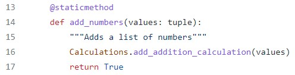
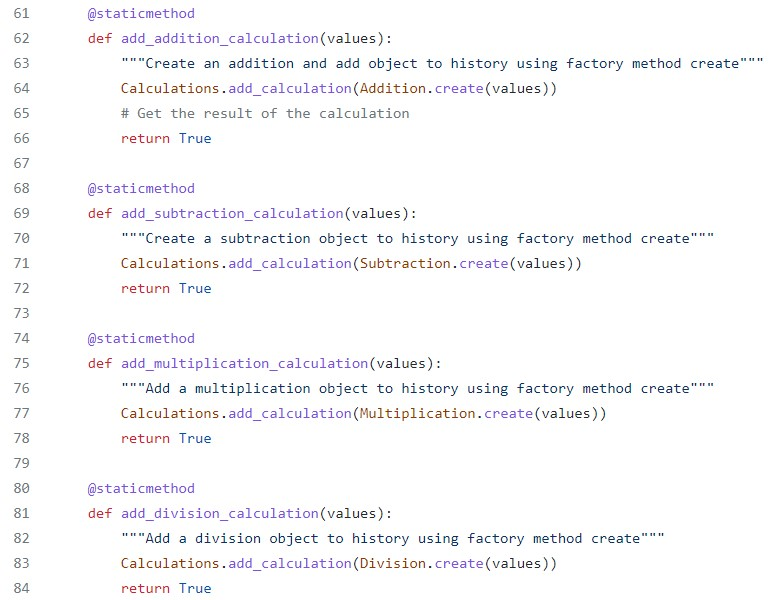
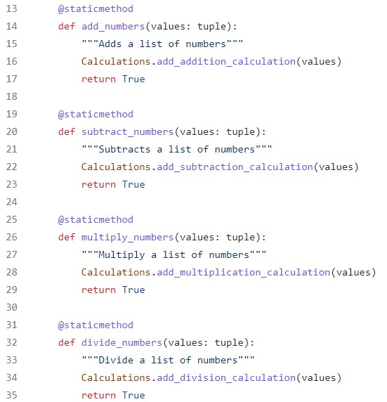

AAA Testing
AAA is a pattern of testing that helps determine whether the functions in a program are working as expected. Testing is important because it helps us pinpoint problem areas in our code in development before deploying problematic code. It also allows us to keep track of where code breaks as APIs change and new code is added later on.
To start, AAA stands for Arrange, Act, and Assert.
Our calculator program includes tests for each function based on the AAA testing pattern discussed below.
For this article, we will be using the following function found in calculator.py for testing using the AAA testing pattern:
ARRANGE
Arranging is the process of arranging the inputs and targets needed to set up for the test cases.
An example of encapsulation in our calculator program is in our calculations class:

Note: The full calculations class can be viewed here: https://github.com/tlr24/calc_project/blob/main/calculator/history/calculations.py (Full script not shown here).
In our example, we can see that we create a Calculations class on line 8. On line 11, we give our Calculations class a list variable names history to store our calcuation history.
We also define several methods including add_calculation() (line 14), clear_history() (line 20), get_calculation()(line 26), and remove_calculation() (line 36) that modify our history variable by appending, clearing, returning, and removing from it.
When a Calculations object is instantiated from the Calculations class, it acts as a single unit that encapsulates the history variable and all of its functions that can alter the history variable.
ACT
Abstraction focuses on hiding the internal implementations of a process or method from the user.
An example of abstraction in our calculator program is found in the calculator class.
In the calculator class, there are simple methods for basic calculator operations including add_numbers, subtract_numbers, multiple_numbers, and divide_numbers.
The actual code that does all the calculating for these methods is hidden behind the add_addition_calculation (etc.) methods found in the Calculations class which then inherits all the Addition, Subtraction, etc. classes that contain the methods with the actual code to do the calculations.
Calculations.py: 
The user only needs to call add_numbers to do their addition calculation as the actual code is hidden from them in the Addition class.
Abstraction makes it easier for the user to use the calculator interface with the easy calculation methods that hides the real code behind the operation.
ASSERT
Abstraction focuses on hiding the internal implementations of a process or method from the user.
An example of abstraction in our calculator program is found in the calculator class.
In the calculator class, there are simple methods for basic calculator operations including add_numbers, subtract_numbers, multiple_numbers, and divide_numbers.

The actual code that does all the calculating for these methods is hidden behind the add_addition_calculation (etc.) methods found in the Calculations class which then inherits all the Addition, Subtraction, etc. classes that contain the methods with the actual code to do the calculations.
Calculations.py:
The user only needs to call add_numbers to do their addition calculation as the actual code is hidden from them in the Addition class.
Abstraction makes it easier for the user to use the calculator interface with the easy calculation methods that hides the real code behind the operation.